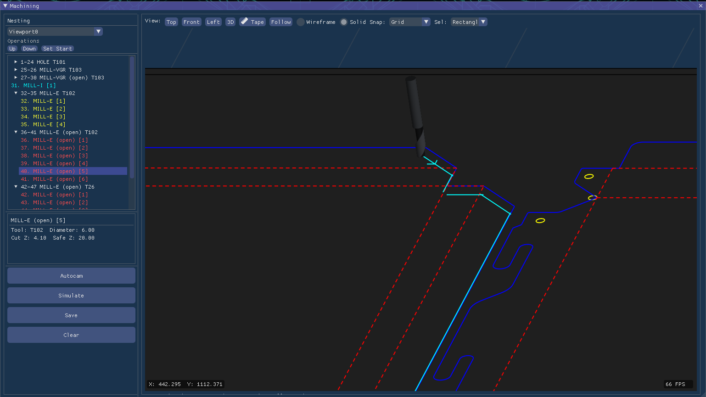
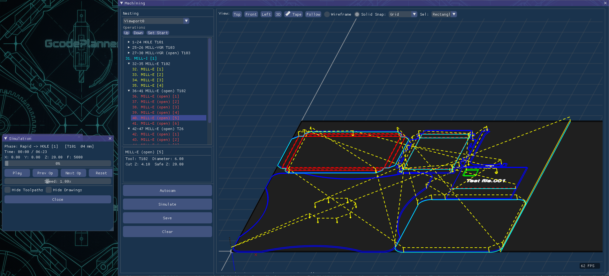
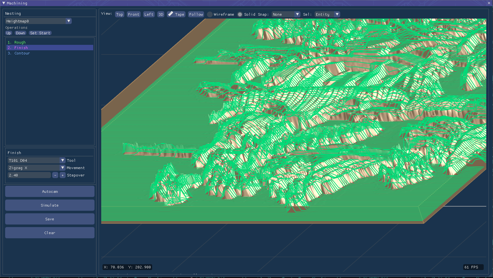

Intelligent Automatic Toolpath Generation
The Machining Module automatically generates optimized toolpaths for 3-axis and 2.5D operations. With smart features like auto tab placement and cut optimization, it delivers fast, safe, and highly efficient G-code for a wide range of CNC machines.

Automatic Toolpath Generation

Machining operation setup

Toolpath Simulation & Verification
Key Features
- Fully automatic CAM based on selected machining methods
- Intelligent auto tab placement and tab management
- Cut optimization to reduce machining time and tool wear
- Smart lead-in/lead-out strategies with collision avoidance
- Support for 3-axis and 2.5D machining operations
- Built-in postprocessors for: Aluranger, Axyz, Biesse Rover, DeskCNC, Haas, Kuka, Mach3, Shopbot, TurboCNC and more
Combining high automation with excellent precision, this module allows operators to produce high-quality parts faster while maintaining safety and efficiency across different machine types.